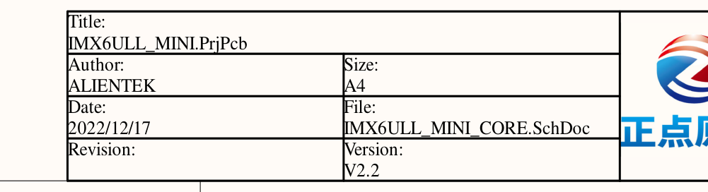

图纸怎么读：五遍法
拿到 12 页原理图，新手的反应是「从左上角开始逐根线看」。正确做法是先看骨架，再看器官：标题栏 → 电源树 → 网络名 → 关键器件 → 细节。这一章给出可复用的五遍法，全部用本板 MINI V2.2（4 页）+ CORE V2.0（8 页）的真实内容演示。

新窗口打开读完这一章，你应该能
- 从标题栏读出工程名、版本、页号，判断图纸是否配套
- 用位号前缀（U/R/C/L/D/Q/Y/P/TP/SW）在 3 秒内判断器件类型
- 用网络命名反推电压域、信号方向、低有效极性，不靠猜
- 看懂跨页连接：同名网络即连接、电源符号与地符号的差别
- 按「电源→时钟复位→存储→接口→外设」的顺序，30 分钟摸清一张陌生图
3.1.1第一遍：标题栏与页序
先确认四件事，否则后面全是白读：
- Project / File：这张图属于哪个工程、哪一页。本板是 IMX6ULL_MINI 工程，MINI 底板 4 页电路 + 1 页（第 5 页）多为空白/说明。
- Version：V2.2。核心板是 V2.0，两份必须配套——MINI V1.7 的 60pin 定义与 V2.2 不同。
- Sheet x of y：确认总页数，避免漏读。
- 区域坐标 A–D / 1–4：图纸四周的边框坐标，用来「报位置」，比如「C3 区那颗电解」。
读图时养成习惯：每翻一页，先看左下角/右下角的页标题（如 SNVS、ARM/SOC、LVDDR3），它告诉你这一页的主题，比逐个网络看快十倍。
3.1.2第二遍：位号前缀就是器件类型
| 前缀 | 器件 | 本板实例 |
|---|---|---|
| U | 集成电路（SoC 常拆成 U1A–U1E 多部分） | U1A（IMX6ULL-POWER）、U6 MT3420B、U10 UM805RE、U11 SR8201F |
| R / C / L | 电阻 / 电容 / 电感 | R56 124K、C21 224、L1 2.2µH |
| D | 二极管 / TVS / LED | D1 SMBJ5.0A、D3 RB521S-30、LED1 PWR |
| Q | 三极管 / MOS | Q2 2SK3018、Q1 SS8550（底板） |
| Y / X | 晶振（无源） | Y2 24MHz（核心板）、32.768kHz（RTC） |
| P / J / IMX | 连接器 / 排针 | P2 SDIO WIFI（6×2）、IMX1/IMX2 60pin（底板） |
| TP | 测试点 | TP3 SOC_IN、TP4 SNVS_3V3、TP7 VCC_DDR、TP8 VCC_CSI |
| SW | 开关 / 拨码 | 底板 D1–D8 八位拨码（BOOT 配置） |
一个细节：U1A/U1B… 是同一颗芯片的不同功能块。i.MX6ULL 有 400 多脚，一张 A4 放不下，Altium 把它拆成 POWER、CPUPWR、DDR、EMMC 等多块。看到 U1A 就不要去找「U1 完整符号」——它不存在。
3.1.3第三遍：网络名比连线更可靠
原理图的「线」只在本页有效，跨页靠同名网络。所以网络名就是「隐形的连线 + 说明书」：
| 命名形式 | 含义 | 本板例子 |
|---|---|---|
| 电源域前缀 | 电压域归属 | VDD_SNVS_3V3、NVCC_DRAM、DRAM_1V35、VCC_CSI |
| _P / _N | 差分对正/负 | USB_OTG1_DP/DN、DDR 的 DQS_P/N |
| # 或 _B 结尾 | 低有效 | ENET1_RST#、USDHC1_CD_B（卡检测，低=插入） |
| TX / RX、IN / OUT | 方向 | UART1_TXD/RXD、DCDC_3V3_PG（输出给别处） |
| 数字后缀 | 同一总线的第 n 路 | LCD_DATA0–23、ENET1_/ENET2_、UART1–UART5 |
电源符号 vs 网络标签：像 DCDC_3V3、GND、DC5V 这种带符号的，是「全局电源网络」，跨页自动连通；而 VDD_ARM_SOC_IN、SOC_IN 这类是普通网络标签，只在本页/同名处连接。看错这一条，就会得出「这颗电容没接地」的荒谬结论。
3.1.4第四遍：五遍法的阅读顺序
- 电源树：DC_IN → 5V → 3.3V → 各路（SNVS/ARM/DDR/SD/CSI）。先知道「谁能给谁供电」，后面看到任何芯片都能问「它吃哪路电」。
- 时钟与复位：24MHz、32.768kHz、复位芯片、POR_B。这是「板子能不能起来」的最小集合。
- 存储：DDR3L、eMMC、NAND、TF。启动路径决定 BOOT 配置。
- 接口：USB、以太网、UART、CAN、RS485、LCD、CSI。
- 外设与指示：LED、按键、蜂鸣器、拨码、测试点。
为什么按这个顺序：电源错，一切错；时钟错，什么都不跑；存储错，起不来；接口错，只是功能缺失。排查时也按这个顺序，能最快定位「完全不启动」和「某个功能不通」的区别。
3.1.5第五遍：五个「图纸陷阱」
- DNP / NC / 0R/NC：位号在、焊盘在、但不贴。本板 R58（10K/NC）、R67（0R/NC）、JTAG1（DNP）都是「预留」。看到它们不要以为板子少件。
- 复用脚：BOOT_CFG1[1..16] 与 LCD_DATA3/4/5/6/11 是同一批球（图上直接写在一起）。启动时做配置，运行时做 LCD 数据——这就是「同一根线两种身份」。
- 同名不同页：DCDC_3V3 既在 MINI p4 产生，又在 CORE p1 被 U12 使用。找「谁产生它」要跨页搜。
- 注释行：图上以 # 开头的文字是设计者的计算备注，如 #R1/R2=1.25、#SD1_VSELECT=0: R1/R2 = 3.09: 3.27V。这些备注是「送上门的答案」，比你自己反推快。
- 测试点：TP3/TP4/TP5/TP6/TP7/TP8 是给调试用的，实物是焊盘或针脚。上电先量这几个点，比乱戳一通高效得多。
网络名解码器输入一个网络名，判断电压域、方向、极性
选一个本板网络
30 秒摸清一张陌生图
① 看标题栏（哪块板、哪一页、哪版）→ ② 扫一眼大号红字分区标题（SNVS / ARM/SOC / NVCC_SD）→ ③ 找电源符号（3.3V/5V/1.35V 各在哪）→ ④ 找晶振与复位芯片 → ⑤ 找连接器。做完这五步，你已经知道「这块板怎么活、怎么接外面」。
练习（答案在折叠里）
1. 图上 U1A、U1B 是两颗芯片吗？
不是，是同一颗 i.MX6ULL 的不同功能块（按电源/CPU/DDR 等拆分绘制）。
2. USDHC1_CD_B 的 _B 是什么意思？
低有效（Bar）。卡插入时该脚被拉低；上拉 47k 保证未插卡时为高。
3. DCDC_3V3 与 VDD_ARM_SOC_IN 有什么区别？
前者是全局电源符号（跨页全连通），后者是普通网络标签（本页/同名连接），电压也不同（3.3V vs 1.35V）。
4. 为什么 BOOT_CFG1[3] 与 LCD_DATA3 是同一个球？
SoC 引脚复用：复位期间采样 BOOT 配置，运行后作为 LCD 数据线。
5. 图上标注 10K/NC 表示什么？
焊盘预留但不贴（No Connect/DNP），需要调试时才装。